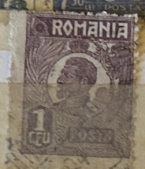
| SOURCE | TITLE| IMAGE MATCH | click to source page |
| eBay | ROMANIA 269 - King Ferdinand "1920 Violet" (pb54860) | eBay | 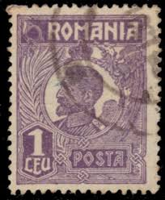 |
| HipStamp | Romania 269 - Used - 1L King Ferdinand (1920) (1) | Europe - Romania, General Issue Stamp / HipStamp | 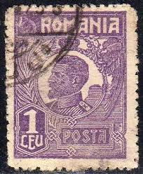 |
| eBay | 1920/1922 King Ferdinand,CAP MIC,1 LEU,Romania,M.272 b violet Stamp. 1 cent. | eBay | 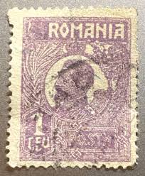 |
| eBay | Lot of 7 Romania Postage Stamps | eBay | 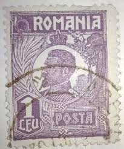 |
| Stamp Community Forum | Romania 1918 - Stamp Community Forum | 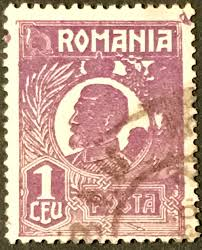 |
| eBay | ROMANIA STAMP 1920-1927 King Ferdinand I 1L (KBX) | eBay | 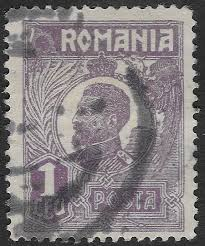 |
| Shutterstock | 6+ Hundred Royal Mail Uniform Royalty-Free Images, Stock Photos & Pictures | Shutterstock | 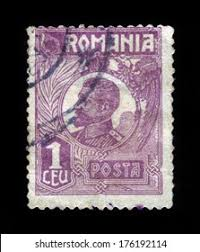 |
| Find Your Stamps Value | King Ferdinand 3l buff stamp price, value | 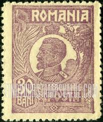 |
| HipStamp | Romania 1920 #262 MH SCV(2022)=$0.25 | Europe - Romania, General Issue Stamp / HipStamp | 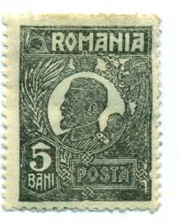 |
| All Numis | 1 Leu - Ferdinand I, 1920 - Romania - Stamp - 41789 | 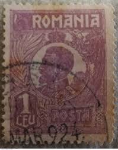 |
| Find Your Stamps Value | King Ferdinand 2l light green stamp price, value | 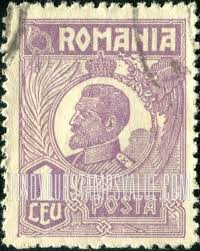 |
| HipStamp | Romania 269 - FVF used | Europe - Romania, General Issue Stamp / HipStamp | 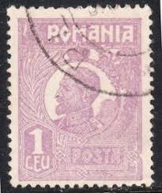 |
| eBay | Olympics Romania Error, Variety Stamps for sale | eBay | 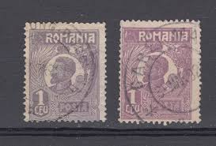 |
| Shutterstock | Brazil Circa 1945 Stamp Printed Brazil Stock Photo 105440462 | Shutterstock | 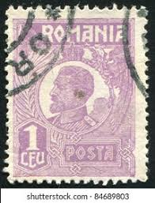 |
| Shutterstock | Romania Circa 1931 Stamp Printed Romania Stock Photo 91877666 | Shutterstock | 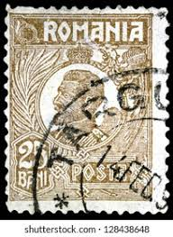 |
| Post Road Company | Collectible Stamp Romania Scott 273a, Year 1920 | 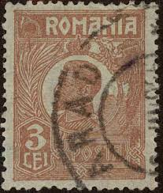 |
| Alamy | Romania king ferdinand stamp hi-res stock photography and images - Alamy | 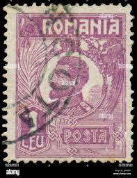 |
| allnumis.com | Romania - Stamps Catalog | 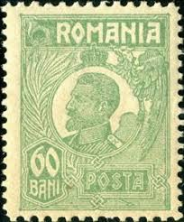 |
| Alamy | Romanian king hi-res stock photography and images - Alamy | 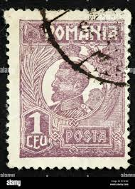 |
| eBay | 1920/1922 King Ferdinand,CAP MIC,1 LEU,Romania,M.272 b/Dark violet/variety/2,MNH | eBay | 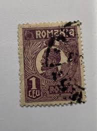 |
| Dreamstime.com | The Esterhazy Castle in Fertod, Hungary Stock Image - Image of esterhazy, stairway: 182273101 | 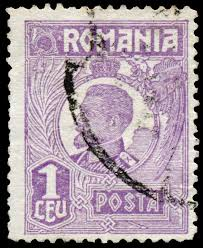 |
| eBay | Romania 1923 STAMPS KING FERDINAND 10 BANI OLIVE GREEN UNISSUED MNH POST | eBay |  |
| Todocolección | rumania. 1920. rey fernando i - Buy Antique stamps of Romania on todocoleccion | 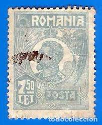 |
| eBay | ROMANIA - USED STAMP - KING FERDINAND, 30b - 1920. | eBay | 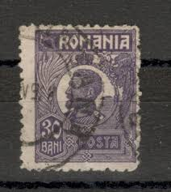 |
| allnumis.com | 25 Bani - Ferdinand I, 1921 - Romania - Stamp - 44361 | 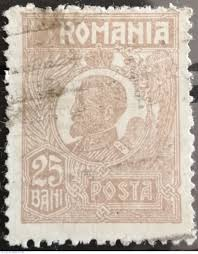 |
| Colnect | Stamp: Ferdinand I (Romania(King Ferdinand I 1920-27) Mi:RO 276II,Sn:RO 273,Yt:RO 290,Sg:RO 935a 📮 | 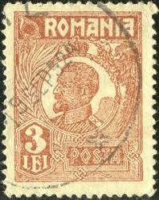 |
| eBay | Royalty Romanian Stamp Blocks for sale | eBay | 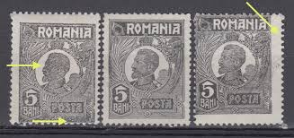 |
| Blogger.com | Big Blue 1840-1940: Romania 1885-1926 | 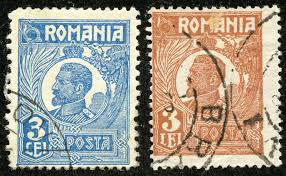 |
| eBay | ROMANIA - USED STAMP - KING FERDINAND, 5L - 1925. | eBay | 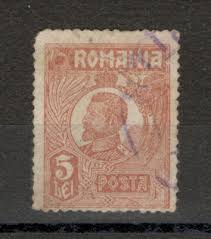 |
| eBay | Romania 1918 CLASSIC ovp PTT + 2 perforation errors FERDINAND used | eBay | 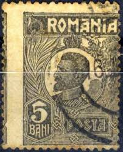 |
| revenues.ro | Romanian REVENUES, a true story about fiscal stamps | 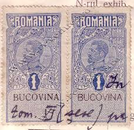 |
| Okazii.ro | Cauti TIMBRE DE AJUTOR PENTRU TUBERCULOSI REGINA MARIA - BL 4 CU EROARE DANTELURA MNH? Vezi oferta pe Okazii.ro | 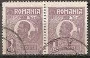 |
| Just curious why Does normal post from other countries never arrive in romania? | 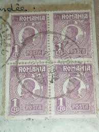 | |
| allnumis.com | 30 Bani 1920 - King Ferdinand I, 1920 - Romania - Stamp - 12596 | 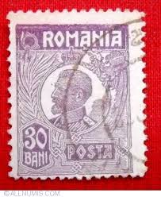 |
| Stamp Community Forum | Romania : Bessarabia - Stamp Community Forum | 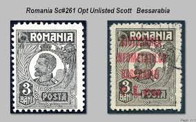 |
| eBay | Romania Scott 262 Stamp Lot - 1922 King Ferdinand I (Mint Hinged) 25_25 | eBay | 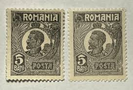 |
| lastdodo.fr | Ferdinand Ier de Roumanie [1865-1927] Catalogue de timbres - LastDodo | 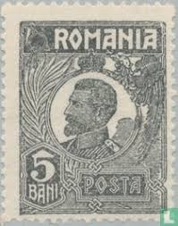 |
| eBay | 1920 King Ferdinand,CAP MIC,30 BANI,Romania,269x,Faserpapier/Fiber Paper,VFU/x4 | eBay | 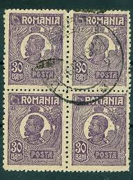 |
| Coin Community | The Smallest Banknote In The World - Coin Community Forum | 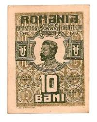 |
| A.Karamitsos | International Auctions | Romanian P.O. - A.Karamitsos | International Auctions | 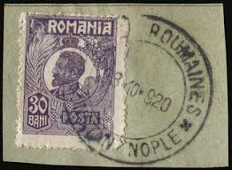 |
| notafilia-kp.com | 10 bani, 1917 | notafilia-kp.com | 99598 | paper money | 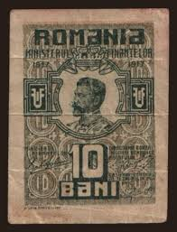 |
| eBay | Romania stamp ca. 1918 w/ revenue overprint, rare, MH OG | eBay | 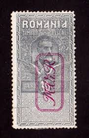 |
| Find Your Stamps Value | Prix du timbre King Ferdinand 2l light green | 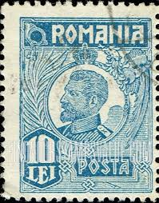 |
| Violity | Румыния 10 Бани 1917 год (106845194) - buy on Violity | 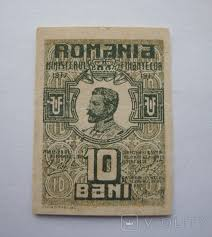 |
| Amazon.com | Amazon.com: German. Military Administration. Romania Z6 (Complete.Issue.) with Hinge 1917 War Tax (Stamps for Collectors) : 玩具和遊戲 | 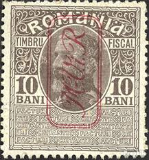 |
| eBay | Romania 1923 STAMPS KING FERDINAND 10 BANI OLIVE GREEN UNISSUED MNH POST | eBay | 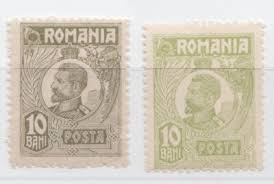 |
| GermanStamps.net | Fiscal Stamps – 15 September 1917 | GermanStamps.net | 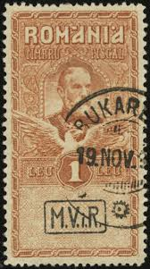 |
| Delcampe | Search in the "Romania > Revenue Stamps" category | Delcampe | 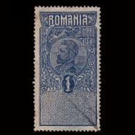 |
| Where can I find for myself the highest quality American Xxlstamps in Romania | 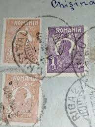 | |
| one.bid | Romania 10 - 50 Bani 1917 Banknote Lot of 3 Banknotes - Online auction / Online bidding - Price - OneBid | 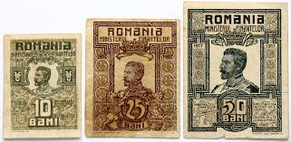 |
| allnumis.com | 1 Leu 1919 - Fiscal stamp, Fiscal stamps - Romania - Stamp - 33289 | |
| Darabanth Auction House | Closed 435. Online auction - Document Stamps | Darabanth Auctions Co., Ltd. | |
| eBay | Romania Revenue Stamp King Ferdinand I1919 issue 1 Lei Fine used A4P18 | eBay | |
| HipStamp | Romania Revenue Stamp Timbru Statistic 25b Fine Used A4P10- | Europe - Romania, Stamp / HipStamp | |
| Stamp Community Forum | Romania- German Occupation 1917-18 - Stamp Community Forum | |
| postbeeld.com | Stamps from Romania - PostBeeld - Online Stamp Shop - Collecting | |
| Bid Inside Auctions | Katz Auction 42 - Auctions - Katz Coins - 21 | |
| HipStamp | ROMANIA; Early 1900s classic Revenue issue used 10b. value | Europe - Romania, Stamp / HipStamp | |
| carismatixworld.com | Banknotes By Its Size - Ƈ𝖆𝖗𝖎𝖘𝖒𝖆𝖙𝖎𝖝 Ꮿ𝖔𝖗𝖑𝖉 |